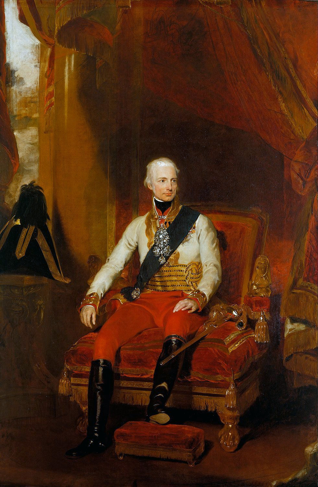
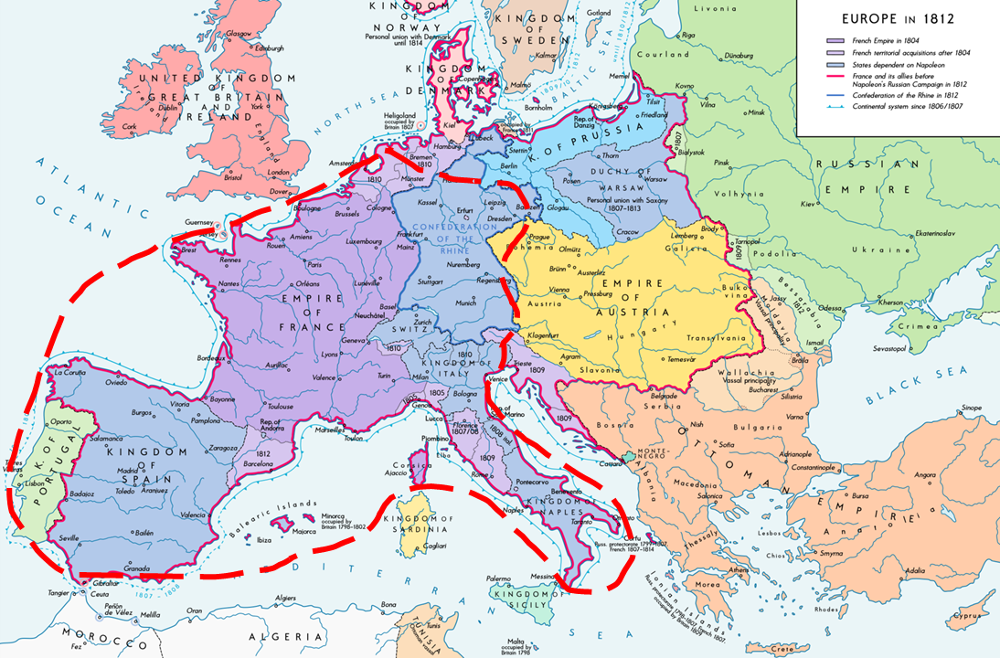
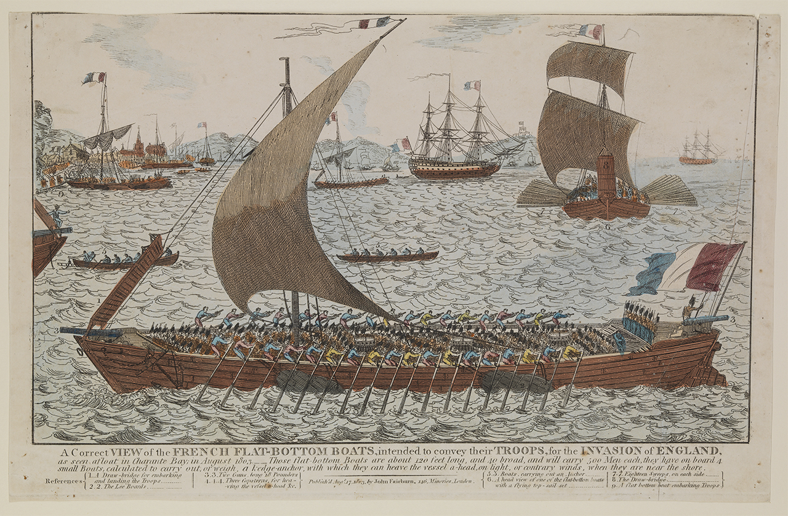
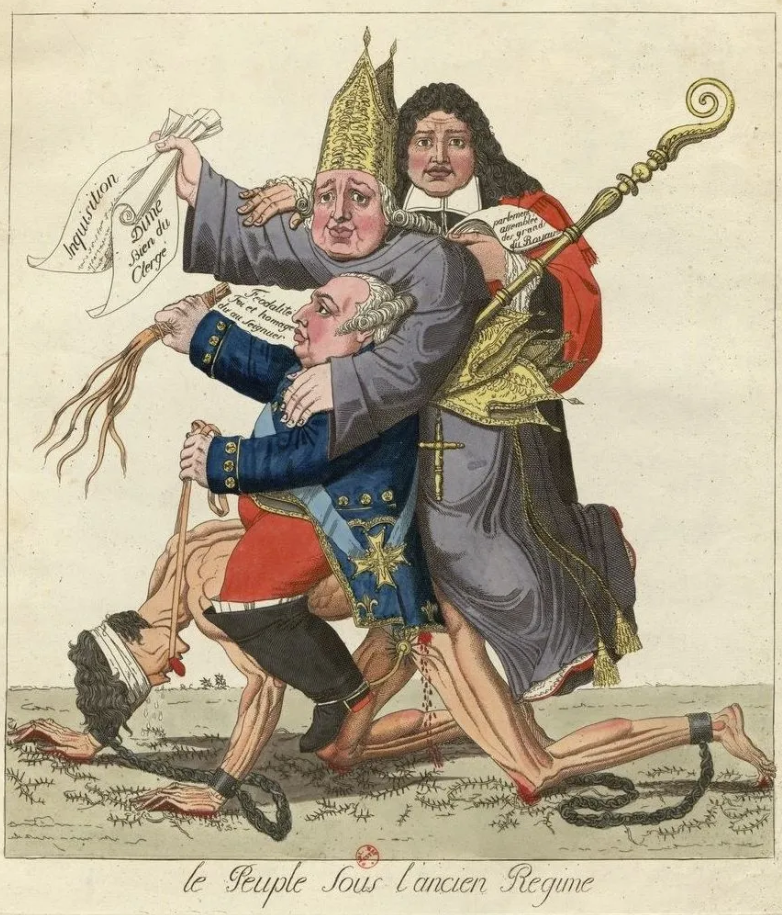

휴전 (7) - 메테르니히의 조건
게시: 2023-08-14T06:30:11+09:00
아직 정식 휴전 조약이 맺어지기 전인 6월 3일부터 나흘 동안, 러시아 외교관 네셀로더(Karl Robert Reichsgraf von Nesselrode-Ehreshoven)는 오스트리아 빈에서 프란츠 1세(Franz I)와 메테르니히, 그리고 오스트리아군 총사령관인 슈바르첸베르크(Schwarzenberg)와 일련의 회동을 가지고 있었습니다. 오스트리아 수뇌부라고 할 수 있는 이 인물들과의 회의를 마치고 연합군 사령부로 되돌아간 네셀로더는 짜르 알렉산드르에게 오스트리아가 참전하기 위해서는 먼저 충족되어야 하는 조건이 있다고 전달했습니다. 그 조건이란 나폴레옹과 연합군 사이에서 중재역을 맡고 있던 오스트리아가 먼저 나폴레옹에게 다음 조건들을 제시하며 종전 협상을 벌여야 한다는 것이었습니다. 만약 나폴레옹이 오스트리아가 제시한 조건을 거부한다면 오스트리아도 참전하겠지만, 그러기 전에는 참전하지 않겠다는 것이 오스트리아의 입장이었습니다. 황제 프란츠 1세도 이 입장을 견지했지만, 네셀로더가 보기에 이 조건들의 작성자는 바로 메테르니히였습니다.

(신성로마제국 황제 프란츠 2세는 신성로마제국을 해체하고 오스트리아 황제 프란츠 1세가 됩니다. 이 그림은 1818년 그려진 것인데, 프란츠 1세는 나폴레옹보다 1살 연상입니다.) 메테르니히가 제시한 평화 협정의 조건은 아래와 같았습니다. 1) 바르샤바 공국은 오스트리아, 러시아, 프로이센이 분할하여 합병한다 2) 단치히(Danzig)는 프로이센에게 돌려주고 프로이센에서 프랑스군은 완전히 철수한다 3) 1809년 전쟁 이후 프랑스 영토가 되었던 일리리아(Illyria, 지금의 크로아티아 일대)는 오스트리아에게 돌려준다 4) 프랑스 영토로 편입된 함부르크와 뤼벡 등 옛 한자동맹 도시들은 어느 왕국에게도 종속시키지 않고 자유도시로서 독립시킨다. 나중에 보시겠지만, 물론 나폴레옹은 이런 어처구니 없는 조건을 받아들일 생각은 1도 없었습니다. 하지만 이 조건들은 러시아나 프로이센으로서도 절대 받아들일 수 없는 것들이었습니다. 러시아와 프로이센은 어느 부분에 대해서 그렇게 부정적이었을까요? 1번과 2번은 연합군에게 일방적으로 유리한 것이었고 3번 조건은 오스트리아에게만 유리한 것이었으며, 4번 조건은 그냥 1806년 전쟁 이전으로 되돌아가는 것 뿐이었습니다. 프랑스에게는 매우 좋지 않은 것이었지만 연합군 중 어느 누구에게도 딱히 손해볼 것도 이익을 볼 것도 없는 것이었습니다. 러시아와 프로이센이 펄쩍 뛴 것은 여기에 적히지 않은 조건들, 즉 라인 연방 때문이었습니다. 나폴레옹은 바이에른, 바덴, 뷔르템베르크, 작센 등 친프랑스 독일계 국가들로 구성된 라인 연방을 통해 서부 독일을 완전히 장악하고 엘베 강 일대까지 세력을 확장하고 있었는데, 메테르니히가 제시한 조건 중에 라인 연방 해체가 없다는 것은 엘베 강까지를 나폴레옹의 세력권으로 인정한다는 소리였습니다. 특히나 프로이센으로서는 절대 받아들일 수 없는 것이, 원래 프로이센 영토의 거의 절반에 해당하는 땅을 빼앗아 만든 베스트팔렌 왕국도 라인 연방이었으므로, 프로이센은 여전히 과거의 절반 밖에 안 되는 소국으로 찌그러진 채로 있으라는 소리였기 때문이었습니다. 나폴레옹을 라인 강 서쪽으로 몰아내야 러시아의 안전을 보장받을 수 있다고 생각하던 러시아로서도 이건 받아들일 수 없는 조건이었습니다. 만약 그 정도로 만족했다면 애초에 후퇴하는 나폴레옹의 뒤를 쫓아 네만 강을 건너지도 않았을 것이었습니다. 더군다나 네덜란드, 이탈리아와 스페인, 포르투갈 등에 대해서는 아무런 요구가 없었습니다. 이 조건대로 평화 협정이 맺어진다면, 나폴레옹은 서쪽 이베리아 반도부터 북으로는 네덜란드, 남으로는 이탈리아 반도의 장화 끝 부분까지, 동쪽으로는 엘베 강까지의 거대한 제국을 유지할 수 있었습니다. 그런 거대 제국은 1812년 원정 실패의 상처만 추스린다면 언제든 다시 프로이센과 러시아를 침공할 수 있었습니다.
여기서 주목하셔야 할 것은 이 시점까지는 러시아의 짜르도 메테르니히도 프란츠 1세도, 그 어느 누구도 나폴레옹을 퇴위시키고 부르봉 왕가를 복원시킨다는 생각은 그 누구도 하지 않고 있었다는 점입니다. 러시아와 프로이센이 원했던 것은 국경선을 제1차 대불동맹전쟁 이전으로 되돌리고 옛 국제 질서를 복원하는 것이었습니다.

(메테르니히의 조건을 나폴레옹이 받아들인다면 나폴레옹 제국의 최대 판도를 보여주는 저 지도에 붉은 점선으로 대충 그려진 영역이 줄어든 나폴레옹의 제국이 됩니다. 보시다시피 그렇게 나쁘지 않습니다!) 거기에 더해, 이 협상에 끼지도 못했지만 이 조건들은 영국으로서도 절대 받아들일 수 없는 것이었습니다. 1805년 10월의 트라팔가 해전으로 완전한 제해권을 장악하기 전까지, 나폴레옹의 손에 있는 네덜란드의 해군력은 영국에게 꾸준한 위협이 되어 왔고, 이베리아 반도에서의 영국의 국익은 포기할 수 없는 것이었습니다. 또 시칠리아 섬으로 쫓겨난 '두 시실리 왕국'의 부르봉 왕가는 영국 해군에 의존하여 명맥을 유지하며 언젠가 이탈리아 본토로 돌아갈 생각을 하고 있었습니다. 이 모든 것은 실질적인 영국의 자산이었고 영국은 그걸 지키기 위해 나름 엄청난 돈과 피를 들여가며 싸우고 있었습니다. 그러나 바다에서는 제왕일지 몰라도, 영국은 대륙의 스케일을 당해낼 수 없었습니다. 아무리 웰링턴이 이베리아 반도에서 잘 싸워 프랑스군을 상대로 연전연승을 거두고 있다고 해도 이 전쟁의 향방은 스페인이 아니라 작센의 평원에서 결정될 것이며, 중부 유럽에서의 전쟁이 어떻게든 정리되면 나폴레옹의 그랑다르메는 밀물처럼 피레네 산맥을 넘어 3~4만에 불과한 웰링턴의 영국군을 익사시킬 것이 뻔했습니다.

(1804~1805년 프랑스 불로뉴에 집결시킨 영국 침공용 평저선의 모습입니다. 영국측의 그림으로서, A Correct View of the French Flat-Bottom Boats, intended to convey their Troops, for the Invasion of England, as seen afloat in Charante Bay in August 1803'라는 설명이 붙어있습니다. 이런 평저선들은 사실 대부분 네덜란드에서 빌려온 것으로서, 트라팔가 해전 이후 영국 침공이 글자 그대로 물 건너가자 네덜란드가 나폴레옹에게 반환을 요구하는 바람에 나폴레옹의 심기를 크게 거슬린 바 있었습니다.) 그렇다고 오스트리아가 얌체처럼 자국의 이익만 생각하는 것도 아니었습니다. 비록 조건 1번은 오스트리아에게만 유리한 것이긴 했지만 그건 해상 무역을 해야만 하는 오스트리아의 입장에서 도저히 양보할 수 없었기 때문에 끼워넣은 것이었고, 오스트리아로서도 양보하는 것이 많았습니다. 가령 원래 오스트리아의 세력권이었던 북부 이탈리아의 롬바르디아와 베네치아 지역에 대해서는 나폴레옹의 소유권을 인정했습니다. 또 1809년 전쟁에서 빼앗긴 티롤 지역에 대한 권리도 포기했고, 원래 합스부르크 가문의 소유이던 네덜란드에 대해서도 입을 다물었습니다. 대체 메테르니히는 왜 이렇게 나폴레옹에게 관대한 조건을 제시했던 것일까요? 혹시 나폴레옹이 프란츠 1세의 사위라는 고리타분한 인척 관계를 존중했기 때문이었을까요? 비록 메테르니히는 구체제, 즉 앙시앵 레짐(ancien régime)을 지키려는 수구 정치인이었지만 그의 머리 속에는 훨씬 큰 그림이 그려지고 있었습니다.

('Le peuple sous l'ancien Regime'이라는 제목의 그림입니다. 앙시앵 레짐 하에서의 민중이라는 뜻이지요. 앙시앵 레짐이란 글자 그대로 낡은 지배 체계를 말하는 것으로서, 왕을 정점으로 하여 귀족과 종교 지도자들이 민중을 일방적으로 착취하는 구조입니다. 누군가에게는 반드시 타파해야 할 멍에였지만 지배층에게는 반드시 지켜야 하는 꿀단지였습니다.) Source : The Life of Napoleon Bonaparte, by William Milligan Sloane Napoleon and the Struggle for Germany, by Leggiere, Michael V https://en.wikipedia.org/wiki/Francis_II,_Holy_Roman_Emperor https://vaventura.com/tema/ancient-regime-enlightenment/unfair-system https://www.rmg.co.uk/collections/objects/rmgc-object-147384 https://en.wikipedia.org/wiki/Napoleonic_Wars https://en.wikipedia.org/wiki/Treaties_of_Reichenbach_(1813)